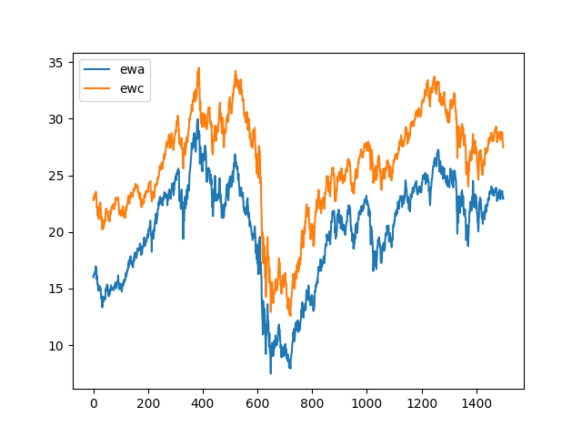
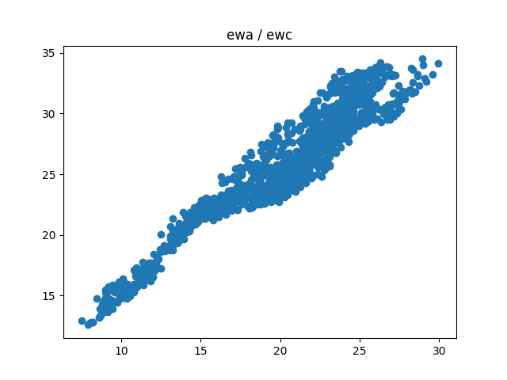
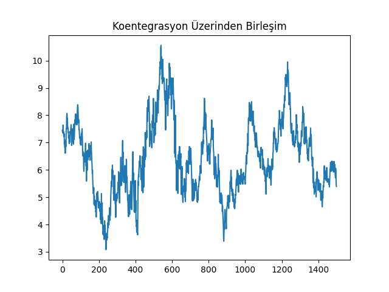
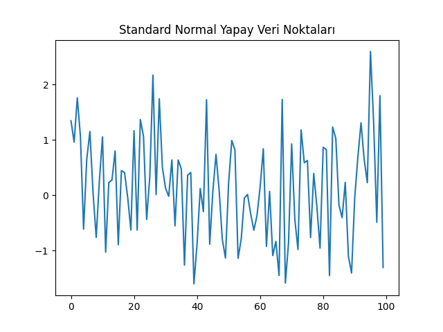
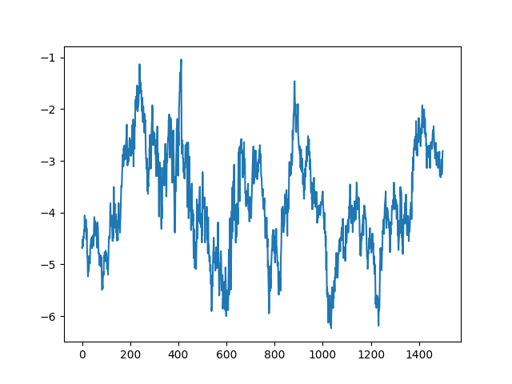
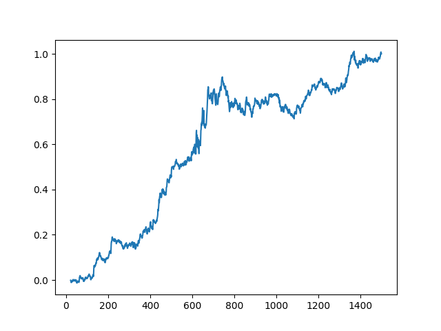
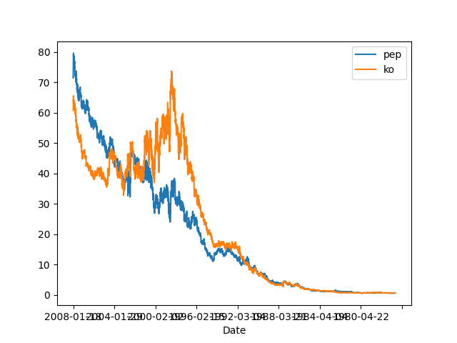

Daha önce bahsettiğimiz gibi çoğu finansal zaman serisi durağan ya da ortalamaya dönüşlü değildir. Neyse ki sadece o tür varlıklara bağlı değiliz. Kendimiz proaktif olarak içinde birden fazla fiyat serisi içeren bir paket / portföy / enstrüman yaratabiliriz ki bu porföyün bütününün zaman serisi durağan olur. Koentegrasyon işte budur: durağan olmayan zaman serilerinin lineer kombinasyonunu yaratıp durağan olan bir seri yaratmak, ki bu durumda birleştirilen serilerin koentegre edilmiş olduğu söylenir. Çoğunlukla bu iki zaman serisi ile yapılır, belli yüzdeler üzerinden bir varlığı alıp, diğerini açığa satarız; bu strateji iyi bilinen "eşli oynama (pairs trading)" stratejisidir. Fakat koentegrasyon tekniği kolaylıkla üç ve daha fazla fiyat serisi için de kullanılabilir. Bu bölümde CADF ve Johansen testini göreceğiz, bunlar iki yaygın koentegrasyon testidir. CADF sadece iki seri için kullanılabilir, Johansen ikiden fazla seri ile işleyebilir.
İki zaman serisi olduğu durumda aslında olan şudur: iki serinin lineer kombinasyonu demek aslında bu iki serinin arasında lineer regresyon işletmekten ibarettir. Regresyonun sonucu olan düz çizginin katsayısı iki değişkenin nasıl birleştirilebileceğini gösterir,
import pandas as pd
df = pd.read_csv('ETF.csv',index_col=0)
df[['ewa','ewc']].plot()
plt.savefig('tser_coint_01.png')

plt.scatter(df['ewa'],df['ewc'])
plt.title('ewa / ewc')
plt.savefig('tser_coint_02.png')

import statsmodels.formula.api as smf
results = smf.ols('ewc ~ ewa', data=df).fit()
hedgeRatio = results.params['ewa']
print hedgeRatio
0.962429398685
Birleştirince
df['coint'] = df['ewc']-hedgeRatio*df['ewa']
df['coint'].plot()
plt.title(u'Koentegrasyon Üzerinden Birleşim')
plt.savefig('tser_coint_03.png')

Aslında "birleştirmek" tam doğru bir kelime değil [4, sf. 413]. Bir regresyon işlettik, ve $y$ içinden $x$'i çıkarttık. Arada lineer bağlantı vardı, ve bu durumda (eğer model iyi ise) geri kalan nedir? Gürültüdür! Gürültü, yani verili bir ortalama (mean) etrafında salınım Gaussian / Normal dağılım değil midir? Evet! Aslında zamana yayılmış Gaussian gürültü durağandır. Yani gürültü üzerinde borsa işlemi karlı bir şeydir! İlginç değil mi? Örnek olarak 100 tane standart normal dağılımdan gelen veri noktası üretelim,
plt.plot(np.random.normal(loc=0,scale=1.0,size=100))
plt.title(u'Standard Normal Yapay Veri Noktaları')
plt.savefig('tser_coint_04.png')

Görüldüğü gibi üstteki sonuca oldukça benziyor. Yazının geri kalanında koentegrasyon sonrası ortaya yeni seri çıkartmaya birleşim diyeceğiz.
Bir diğer bakış açısından daha bahsedelim; bir seneti $x$ diğerini $y$ ekseni üzerinden ve zaman serisi noktalarını $x,y$ kordinatları gibi eşleyip kullanınca, 3 üstteki grafiği elde ettik. Bu grafikte lineer ilişki görülüyordu, bu veriye çizgi uydurarak geri kalan gürültü üzerinde ortalamaya dönüş yapabiliyoruz. Bunu söylemek, aslında 4 üstte her iki zaman serisinin $y$ ekseni grafiklenmiş halindeki serilerin birbiriyle olan "farkının" bir ortalamaya dönüyor olması ile aynıdır. Dikkat edersek iki seri birbiri ile yakından alakalı, ve aralarındaki fark bazen çoğalsa bile, çoğunlukla belli bir seviyeye düşüyor. İşte bu aralık, fark (spread), ya da marj üzerinde de ortalamaya dönüş teknikleri uygulanabiliyor. Düşünülürse bu ilişki bariz gelecektir; iki seri $x,y$ arasında ilişki ortalamadan uzaklaştığında bu noktalarda gürültü artmış olacaktır, aynı noktalarda ikili $y$ grafiğinde aradaki fark fazlalaşmış demektir.
Bu arada, ortalamaya dönüş tekniği çoğunlukla ikinci yaklaşım üzerinden tarif edilir, farkın olup olmadığı, artıp artmadığı anlatılır.
Şimdi daha ilerlemeden önce ortaya çıkan birleşimin gerçekten durağan olup olmadığını anlamak için yapılan testi görelim.
CADF (Koentegreli Genişletilmiş Dickey-Fuller Testi)
Akla bir soru gelebilir: eğer serileri birleştirip durağanlık yaratabiliyorsak elimizde zaten durağanlık testi var, niye yeni bir testi kullanalım? Lineer regresyon yapıp birleştiririz, sonra sonuç üzerinde eski ADF testini yaparız. Aslında Engle ve Granger adlı araştırmacıların yaptığı tam da bu, alttaki çıktıda durağanlığı test etmek mümkün. Not: hangi değişkenin $y$ hangisinin $x$ olduğu önemli (lineer regresyon yapıldığında da önemli tabii ki). Ayrıca bu test sadece iki değişken için işliyor. Daha çok değişken için başka bir yöntem gerekecek.
import pyconometrics
print pyconometrics.cadf(np.matrix(df['ewa']).H,
np.matrix(df['ewc']).H,0,1)
{'adf': -3.6434663488715664, 'alpha': -0.02041081198399386, 'nlag': 1,
'crit': matrix([[-3.88031, -3.35851, -3.03798, -1.01144, -0.65334,
0.15312]]), 'nvar': 1}
Bu sonuçları şu şekilde okuyabiliriz; -3.64 değeri \%95 seviyesindeki değer -3.35'den daha negatiftir (eşik değerleri sırasıyla \%99,\%95,\%90). O zaman sıfır hipotezini (null hypothesis) reddederiz, yani yani EWA ve EWC'nin \%95 kesinlikle koentegre olduğunu söyleyebiliriz.
Sonuç zaman serisi üzerinde Hurst hesabını yaparsak,
import statsmodels.tsa.stattools as st
import sys; sys.path.append('../tser_mean')
import hurst
print 'hurst', hurst.hurst(df['coint'])
print st.adfuller(df['coint'],maxlag=1)
hurst 0.418507486699
(-3.6422479807847292, 0.0050028483243865635, 1, 1498, {'5%':
%-2.863471337969528, '1%':
%-3.4347228578139943, '10%':
%-2.5677982210726897}, 550.21641296353755)
Johansen Testi
Eğer birden fazla zaman serisi arasında koentegrasyon arıyorsak, başka bir yöntem gerekli. Bu konuda ilk akla şu gelebilir: regresyon sonrası artıklar ortalamaya-dönüş ise, çok boyutta regresyon yaparım ve artıkları kullanırım. Burada problem şudur: hangi değişken $y$ hangisi $x$ (vektörü) olacak? Tüm seçenekleri denemek zaman alabilir. Johansen testi aslında akıllıca bir özvektör hesabı ile tam da bunu gerçekleştiriyor (detaylar için [1, sf. 165]).
from johansen import coint_johansen, print_johan_stats
res = coint_johansen(df[['ewa','ewc']], 0, 1)
print_johan_stats(res)
trace statistic [ 19.98321869 3.98276124]
critical vals %90,%95,%99
r<=0 [ 13.4294 15.4943 19.9349]
r<=1 [ 2.7055 3.8415 6.6349]
eigen statistic [ 16.00045745 3.98276124]
critical values %90,%95,%99
r<=0 [ 12.2971 14.2639 18.52 ]
r<=1 [ 2.7055 3.8415 6.6349]
ozdegerler [ 0.01062437 0.00265519]
ozvektorler
[[ 0.74078233 -0.12758778]
[-0.74218753 -0.08957951]]
Şimdi üçüncü bir varlık, IGE ekleyelim, ve üçü arasında koentegrasyon testi yapalım,
cols = ['ewc','ewa','ige']
res3 = coint_johansen(df[cols], 0, 1)
print_johan_stats(res3)
trace statistic [ 34.42862022 17.53171895 4.47102054]
critical vals %90,%95,%99
r<=0 [ 27.0669 29.7961 35.4628]
r<=1 [ 13.4294 15.4943 19.9349]
r<=2 [ 2.7055 3.8415 6.6349]
eigen statistic [ 16.89690127 13.06069841 4.47102054]
critical values %90,%95,%99
r<=0 [ 18.8928 21.1314 25.865 ]
r<=1 [ 12.2971 14.2639 18.52 ]
r<=2 [ 2.7055 3.8415 6.6349]
ozdegerler [ 0.01121626 0.00868086 0.00298021]
ozvektorler
[[-1.04602749 -0.5796762 -0.26467204]
[ 0.7599635 -0.11204898 -0.0789828 ]
[ 0.22330592 0.53159644 0.09515547]]
Johansen testi iki türlü hesap yapar, biri iz istatistiği (trace statistic) diğeri öz istatistiği (eigen statistic). Bu sonucu irdelemek için, herhangi bir metot için, o metotun raporladığı istatistik değere bakarız, ve bu değerlerin kritik aralıklara düşüp düşmediğini kontrol ederiz. Eğer düşüyorsa, $r \le 0, r \le 1, ..$ için kontrol ederiz, o kadar fiyat serisi arasında koentegrasyon var demektir. Üstteki örnekte iz istatistiği her üç senet için \%95-\%99 aralığına düşüyor, demek ki \%95 seviyesinde hipotezleri reddediyoruz, ve koentegrasyonu kabul ediyoruz.
df['yport'] = np.dot(df[cols], res3.evec[:,0])
df['yport'].plot()
plt.savefig('tser_coint_05.png')

import sys; sys.path.append('../tser_stat')
import halflife
hf = halflife.halflife(df, 'yport')[1]
data_mean = pd.rolling_mean(df['yport'], window=hf)
data_std = pd.rolling_std(df['yport'], window=hf)
# yport evec ile senet carpimi
# numUnits yport'un Z skoru
df['numUnits'] = -1*(df['yport']-data_mean) / data_std
# Z skoru 3 kolon yap
tmp1 = np.ones(df[cols].shape) * np.array([df['numUnits']]).T
# evec tekrarla, her satirda tekrar tekrar
tmp2 = np.ones(df[cols].shape) * np.array([res3.evec[:,0]])
# evec sermayenin nasil bolusturuldugu olarak gorulebilir
# positions ise her senete dolar biriminde ne kadar para ayrildigi
positions = tmp1 * tmp2 * df[cols]
positions = pd.DataFrame(positions)
# stratejinin gunluk kar/zarari
pnl = positions.shift(1) * (df[cols] - df[cols].shift(1)) / df[cols].shift(1)
pnl = pnl.sum(axis=1)
# getiri ise pnl'in portfoyun brut piyasa degeri ile bolunmesi
ret=pnl / np.sum(np.abs(positions.shift(1)),axis=1)
# Kumulatif birlesik getiri
plt.plot(np.cumprod(1+ret)-1)
plt.savefig('tser_coint_06.png')

print 'APR', ((np.prod(1.+ret))**(252./len(ret)))-1
print 'Sharpe', np.sqrt(252.)*np.mean(ret)/np.std(ret)
APR 0.123570040726
Sharpe 1.37987492827
Ne kadar para kazanabileceğimizi ölçmek için yine Z skoru yarattık, ve bu skora ters oranda alım ve satım farz ediyoruz. Tabii özvektör üzerinden birleştirilmiş yeni seri üzerinden Z skoru yarattık, sonra bu alım/satım kararlarını tekrar özvektör üzerinden "geriye" tercüme etmemiz gerekiyor, ki böylece 3 varlık üzerinde ne kadar alım / satım yaptığımızı görebilelim. Ek anlatımları üstteki kodun içindeki yorumlarda bulabilirsiniz.
Koentegrasyson ve Korelasyon
Koentegrasyon kavramı pek çok borsacı tarafından bilinmez, ama korelasyonu çoğu kişi iyi biliyor. Bu iki kavram pek çok kişinin kulağına sanki aynı şey imiş gibi gelebilir; fakat matematiksel olarak koentegrasyon ve korelasyon birbirinden oldukça farklıdır. İki fiyat serisinin korelasyon halinde olması bu iki serinin belli zaman aralıklarındaki (mesela günlük) getirisiyle alakalıdır, korelasyon var ise bu iki fiyatın çoğu günde aynı yönde hareket edeceği tahmin edilebilir. Fakat pozitif korelasyon iki senedin uzun vadeli davranışı hakkında hiçbir şey söylemez. Mesela iki senet birbirinden çok ayrılmış bile olabilir, ama çoğu günde kabaca aynı yönde hareket ediyorlar ise korelasyon bunu pozitif olarak gösterir. Alttaki örnekte görelim, senetler Pepsi (PEP) ve Coca-Cola (KO) senetleri,
import pandas as pd
dfpepko = pd.read_csv('pep_ko.csv',index_col='Date')
dfpepko[['pep','ko']].plot()
plt.savefig('tser_coint_07.png')

import corr
dfpepko['retpep'] = dfpepko.pep.pct_change()
dfpepko['retko'] = dfpepko.ko.pct_change()
dfpepko = dfpepko.dropna()
c,tval, pval = corr.p_corr(dfpepko.retpep, dfpepko.retko)
print c, 'p degeri', pval
0.484740095488 p degeri 0.0
0 seviyesinde p-değeri senetlerin yüksek korelasyona sahip olduğunu söylüyor.
import pyconometrics
print pyconometrics.cadf(np.matrix(dfpepko.ko).H,
np.matrix(dfpepko.pep).H,0,1)
{'adf': -2.6276464487688465, 'alpha': -0.0013797381503306329, 'nlag': 1,
'crit': matrix([[-3.88031, -3.35851, -3.03798, -1.01144, -0.65334,
0.15312]]), 'nvar': 1}
Koentegrasyon ise -2.62 değeri vermiş, kritik değerler \%99,\%95,\%90 için gösteriliyor, ve bu değer \%90 için olan kritik değerden bile daha büyük, yani koentegrasyon ihtimali yüzde 90'dan düşük. Demek ki PEP ve KO arasında korelasyon var ama koentegrasyon yok.
Matematiksel olarak düşünürsek bu aslında mantıklı, koentegrason bir regresyondur, serilerden birinin diğerini "açıklaması" üzerine kurulmuştur. Korelasyon ise aynı tek tek, atomik noktalardaki değişimlerin aynı yönde olup olmadığının istatistiği bir anlamda. Bu iki hesap çok farklı şeyleri anlatıyorlar.
Kaynaklar
[1] Maddala, Unit Roots, Cointegration, and Structural Change
[2] Chan, Algorithmic Trading
[3] Chan, Quantitative Trading
[4] Ruppert, Statistics and Data Analysis for Financial Engineering